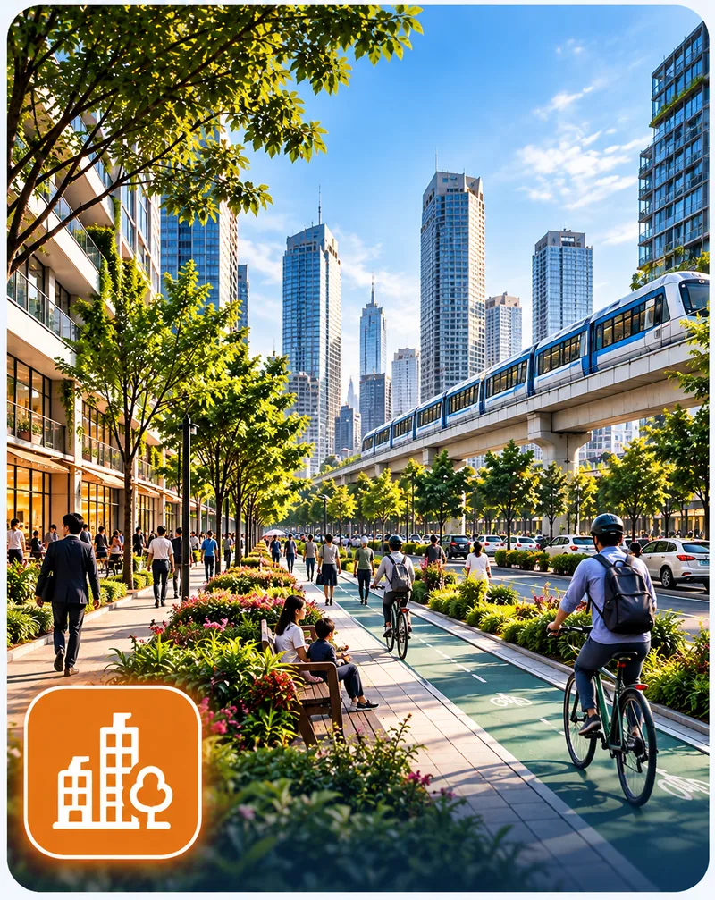
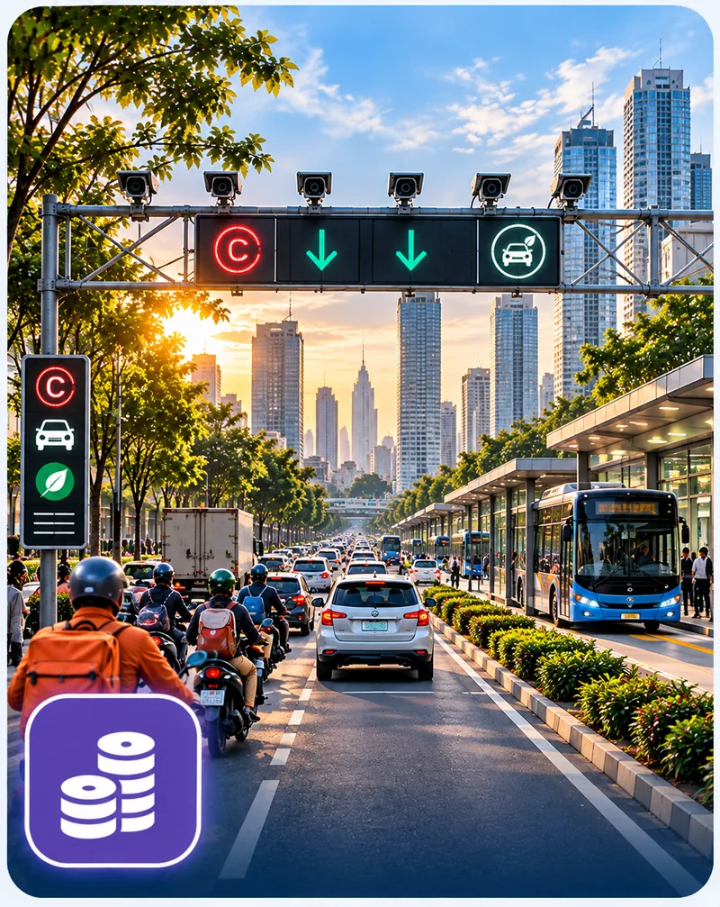
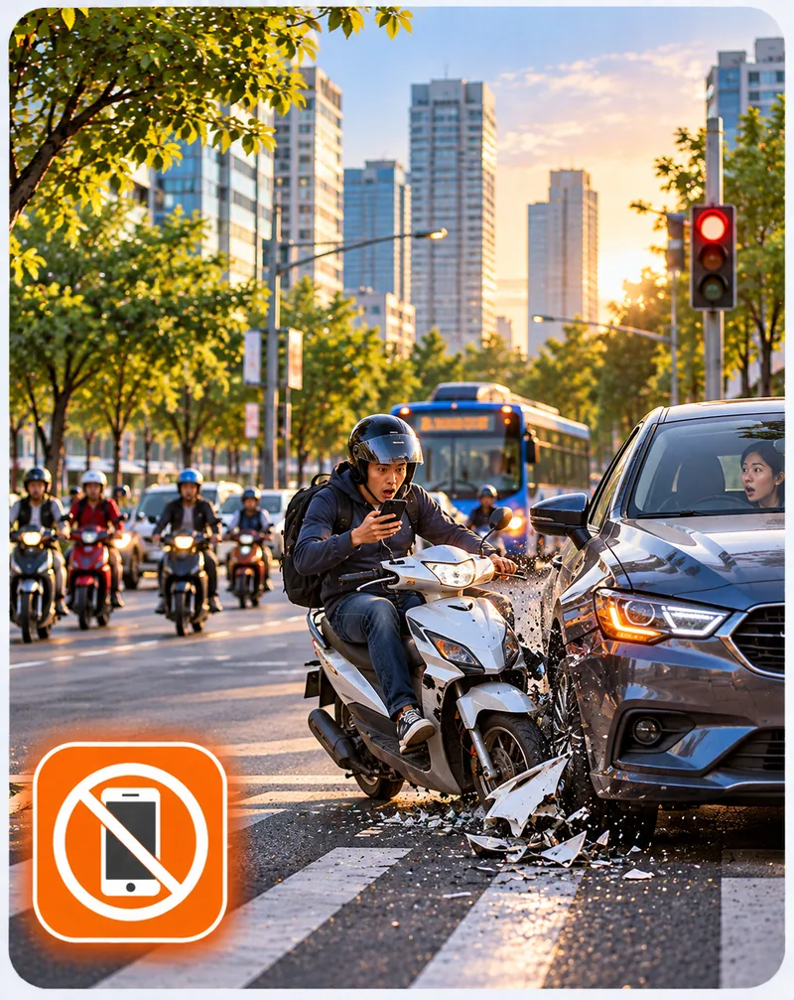
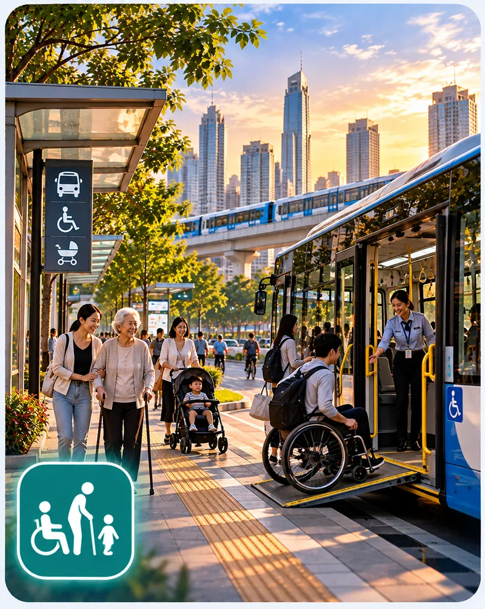
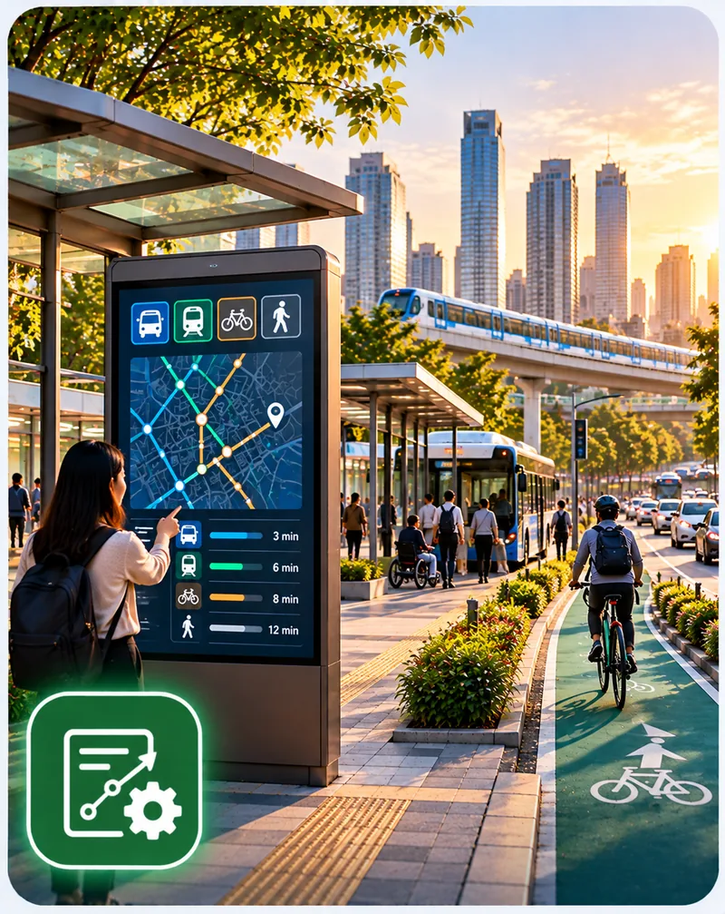

Urban PlanningHow the physical form of cities shapes travel choices, quality of life and the shift to cleaner transport. We study urban mobility, liveable streets and public spaces, and where to place EV charging, battery swapping and shared bike parking.View research summaryVIN-SSUM Lab
Sustainable and smart urban mobility.
Advancing sustainable, smart, and human-centered urban mobility through transport behaviour, traffic safety, modelling, economics, and policy research.
Explore researchAbout
About Vin-SSUM
The Vin Sustainable and Smart Urban Mobility Lab (Vin-SSUM) is an interdisciplinary research lab dedicated to advancing sustainable, intelligent, safe, and people-centred transportation systems. The lab brings together researchers and students from transport engineering, behavioural science, urban studies, economics, data analytics, and artificial intelligence to address current and emerging mobility challenges.
Mission
Our mission is to produce high-quality research, develop innovative analytical methods, and generate evidence-based solutions for more sustainable and efficient transportation. Vin-SSUM connects academic knowledge with real-world applications by supporting policymakers, transport authorities, technology developers, mobility service providers, and local communities.
Vision
Our vision is to become a leading research lab in sustainable and smart urban mobility, contributing strongly to transportation research in Vietnam and internationally. Vin-SSUM seeks to shape future mobility systems that are environmentally responsible, socially inclusive, economically efficient, technologically advanced, and safe for all transport users.
Lab Head
Dr. Nguyen-Phuoc Quy Duy
Associate Professor, College of Engineering and Computer Science, VinUniversity
Head, Vin Sustainable and Smart Urban Mobility Lab (VIN-SSUM)
Dr. Nguyen-Phuoc received his Ph.D. from Monash University, Australia, in 2018 and then worked as a Postdoctoral Researcher at the Singapore-MIT Alliance for Research and Technology (SMART). In 2025, he joined VinUniversity, where he leads the Vin Sustainable and Smart Urban Mobility Lab (VIN-SSUM). His research covers sustainable mobility, travel behaviour, traffic safety, transport modelling, and transport economics. He has published more than 80 articles in leading international peer-reviewed journals (Web of Science, Q1) and has an h-index of 37. Several of his papers rank among the most cited articles in top-tier (A*/A) journals. He has been named in the Stanford/Elsevier Top 2% Scientists list in the field of Logistics & Transportation in 2025 and 2026.
In 2019, he was awarded the prestigious Sidra Solutions Award, recognizing him as the most outstanding postgraduate student from a tertiary institution in Australia or New Zealand. An independent Asian review of motorcycle studies in 2024 also acknowledged him as one of the two most influential scholars with a substantial local impact in the field. Dr. Nguyen-Phuoc was honored to be invited as the sole keynote speaker for the plenary session of the 13th International Conference on Transport Survey Methods (ISCTSC2025). He currently serves on the editorial boards of several leading academic journals (SSCI/Q1) such as Travel Behaviour and Society and Transportation Research Part F: Traffic Psychology and Behaviour.
Research Focus
Six research streams driving sustainable, safe, and intelligent urban mobility.

Smart CityHow digital data and AI can make urban mobility safer, more efficient and more responsive. We apply LLMs and VLMs to social media and street imagery, study smart mobility services, and examine public acceptance and governance of urban data.View research summary
Traffic SafetyWhy road users take risks and what makes roads safer. We study road user behaviour, the occupational safety of delivery and ride-hailing riders, and new evidence from social media, AI and real-world data.View research summary
Transport Equity & AccessibilityWhether everyone can reach the jobs, education, health care and social life they need. We study barriers for people with disabilities and older adults, gender and personal safety, and affordability and spatial access.View research summary
Transport Policy & Demand ManagementHow cities can manage travel demand to cut congestion, air pollution and emissions, and how people respond. We study pricing instruments, access restrictions and the public acceptability of demand management policies.View research summary